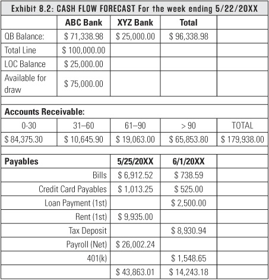
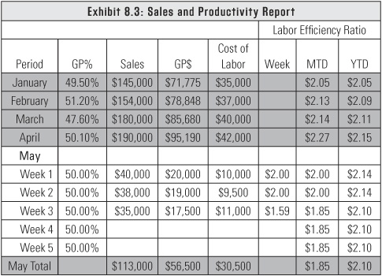
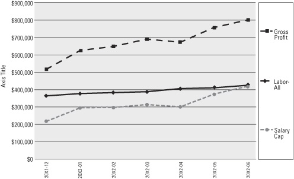

Your numbers are talking . . . are you listening?
Getting into a reporting rhythm is often a challenge for entrepreneurs. They struggle to know what reports they’re supposed to look at, when they’re supposed to look at them, and why they’re supposed to look at them.
Looking at reports is kind of like looking at the dashboard of a car. The problem with dashboards is they can have too many gauges and indicators. The information you want is there, but you don’t know where to look for it. If you try to track too many numbers and create too much data, you end up with your own version of a busy dashboard. You have to know how to keep your reporting simple while still being able to recognize a flashing red light that indicates a problem.
When I work with a client who’s trying to look at the business in a different way, the first thing I establish is a reporting rhythm. We decide what data we need to support that rhythm as well as how important the information is to managing the business. For instance, is a particular number just a good thing to know, or is it something that says you need to take action if it’s above or below a specified number? Have you set action triggers at the right points, or are you being too soft on your requirements?
If you’re going to look at a report frequently, it needs to show a very small amount of data. If you’re going to look at it infrequently, it can contain more data. Don’t fool yourself into thinking that a one-page report is a small amount of data. You can use a small font and use every bit of white space until it can’t be read by the human eye. The report has to be easy to read and digest; otherwise it won’t be useful.
A lot of entrepreneurs say they don’t need to see a report if the numbers are already in QuickBooks. Just because numbers are in QuickBooks doesn’t mean you’re going to look at them. I don’t know any entrepreneurs who have the discipline to look in QuickBooks every time they need to answer a question. You have to push critical data into a report and read it. I don’t care whether you read it electronically or kill a tree and print it, just read it. You can delegate the preparation, but it’s still your responsibility to make sure it gets prepared. There are people in my office who prepare the critical reports, but it still falls on me to say, “Hey, I was supposed to get a report today. Where is it?”
Let’s take a look at what reports you need in your reporting rhythm and how we can keep the numbers speaking to you:
You’d be surprised at how many entrepreneurs have no clue about how much cash they have in their business on a given day. Even though you might not be as involved in the day-to-day processing as you used to be, you can process this information in a very short period of time. I like the daily cash balance report to include which customers paid and what the cash balance is after today’s deposit. Once you get beyond about twenty customers, listing who paid is not always practical, but you would still report the total deposit for the day and the cash balance. An example of a cash balance report is shown in exhibit 8.1. It is important to note that this report needs to be simple and easy to e-mail and read on a PDA or smart phone without opening an attachment.
Believe it or not, there is some dispute over how to arrive at how much cash you have. My definition of cash balance is the bank balance in your accounting system, assuming all outstanding checks have cleared. If your bookkeeper tells you he or she cannot produce this because the cash balance in your accounting system is not up to date, that is a key indicator you have a big problem. Have that person fix it or get a new bookkeeper. Someone in your office can be trained to send this report in a daily e-mail to the key people in your business. If you use a program such as QuickBooks, you can e-mail the amount of the deposit from within the software. You don’t even have to retype it.
No matter where I am in the world, I get a daily e-mail that tells me who paid us that day and what the cash balance is. That may sound like basic information, but it really does matter. I can see if a long-overdue bill was paid and who pays their bills on time. If the cash balance is low, it tells me to have a great sense of urgency to solve the problem. If it’s high, it tells me all is good.
When Jack Stack and his management team bought Springfield ReManufacturing, they considered the cash balance to be a critical number, and they posted it above the time clock in all of their facilities. Their mission was to avoid running out of cash. They bought their business for $9 million, and they borrowed $8.9 million of it. Rumor has it that the banker who loaned them the money was fired shortly afterward for making bad loans to companies like them, so they knew that if they ever went into default, they had no advocate at the bank. They simply could not afford to miss a payment. The tricky part is that they didn’t make any profit in the first year. How did they survive and not miss a payment? They sold everything they didn’t need, including excess inventory and anything that wasn’t bolted down. They generated cash any possible way they could. The next year they were profitable.
Create a rhythm by sticking to whatever day of the week works for you to review your weekly reports. You should look at two reports every week: cash flow forecast and sales and production. It should take a clerk-level person (your controller’s productivity shouldn’t be wasted on this easy task) about fifteen minutes to pull the data together if it’s properly recorded in the first place.
The purpose of the cash flow forecast report is to make sure you have money in the bank when your bills are due. It shows a two-week projection of your expected sources of inflows and outflows. Break your payables up into these five key categories:
You may have one or two more categories, but these five are the most common. The key is to make sure you don’t have a long list. In my firm, one thing we add at the bottom of our list is a running total of partner paychecks that have been missed. If we run out of cash, the owners forgo compensation so that everyone else can get paid. If you miss a paycheck instead of drawing on a line of credit, it gets you focused real quick so you make sure the payroll gets back on track. You do deserve a paycheck, but only if the business is profitable and you’re not having to draw on a line of credit.
Exhibit 8.2 is an example of a cash flow forecast report.

Let’s say today’s cash balance report shows $50,000, and this week’s cost and cash flow report shows you have only $10,000 in bills to pay this week. It looks good until you see that next week you need to cover a $50,000 payroll. The cash flow forecast report spurs you into action, and you look at what receivables you need to collect so you can make the payroll next week. Maybe you have to make other arrangements, such as drawing against your line of credit. You have time to think about a solution because you have a two-week advance warning that there’s a problem. A few of my clients tried to expand the projection beyond two weeks with limited success. This report is designed to give you a two-week heads-up about your cash flow.
My firm pays bills on Mondays, which means that on Fridays we’re making sure that everything that needs to be paid is in the system. Before the checks go out the door, this report gives me a snapshot of our cash balance, aged receivables, and who needs to be paid. We don’t use a lot of credit because we don’t believe in supporting our business that way, but if you need to use your line of credit to cover your payables, look at how much it is, what you’ve drawn on it, and what’s still available.
Here’s a question I always ask in my entrepreneur classes: What does the “due date” field in QuickBooks mean to you? Most of the class says it’s the date that people want the bill to be paid by. Wrong. That date tells me which Monday to get the check in the mail. Since we pay bills only on Mondays, we have to mail checks on the Monday before the due date so they get to the vendors on time. I can use that field however I want, so it works with my payment processing procedures.
I’m not a fan of measuring sales on a daily basis unless you are a retail business or you invoice daily. It creates that busy dashboard we talked about earlier. Even with retail clients who have daily sales, I look at sales on a week-to-week basis because it gives me better numbers overall.
Recently I’ve successfully tied labor efficiency to weekly sales. Remember, labor efficiency is gross profit per labor dollar. For example, I was able to determine a client’s gross profit before any labor was taken out by basically taking their sales minus their cost of goods sold. Let’s say that gross profit before labor came out to 50 percent of sales, so if they had a $40,000 sales week, they had $20,000 in nonlabor gross margin, which is our term for the cost of gross profit before any labor is taken out.
The client’s goal was to have a labor efficiency of 2.0. So that week’s payroll needed to be $10,000. Their production was equal to what their labor productivity should have been. Keep in mind that’s all labor—not just production labor, but also the office staff and everyone else. If their payroll had been $12,000, it would have been higher than what their labor efficiency should have been. The client would have had to ask if that was a one-week anomaly or if it’s something that needed to be tracked.
The best practice seems to be watching this on a weekly basis and then looking at it month-to-date and year-to-date to see if the trends move in the right direction. Exhibit 8.3 is an example of a labor productivity report. You can go to my firm’s website (www.seeingbeyondnumbers.com) to download a copy of the spreadsheet so you can see how the formulas work.

After we identify what your labor efficiency ratio is (that is, your gross profit per labor dollar), that number won’t change dramatically once your business model is set. When you look at chains with great labor management, such as Outback and Starbucks, you’ll find that they send a $9-per-hour person home early when productivity drops below a certain level. That way, they won’t have to make up the $20-plus in revenue the next day to cover the cost of keeping the $9-per-hour employee on duty.
You need to understand the pulse of your business. The Outbacks of the world manage their numbers on an hourly basis, but if you manage yours on at least a weekly basis, you’ll start to establish a gut feeling about the numbers. If you don’t have a natural gut feeling, you can develop it by watching the two numbers that matter most: gross profit and cost of labor. That’s it! And if you don’t understand that part, your business model is never going to work.
Pick a day of the month to review your monthly reports. Don’t look at them every day, or you’ll become blind to the numbers. On your chosen day of the month, pull the numbers together or delegate the task to someone else. Spend time looking at the numbers and determine if your money is being well spent or if you need to make changes. If you are not getting these key reports by the fifth of the month, you need to find the bottleneck and eliminate it.
A profit and loss report (P&L) shows you if your business made or lost money during the reporting period. It shows your revenue, costs, and expenses, and it concludes with your net income. You just have to keep in mind that a month is an extremely inaccurate period of time. I’d never look at just one month by itself; I’d look at a minimum of six months of monthly data to see what the ups and downs were. The most useful presentation of the P&L for me is a rolling-twelve view.
Put simply, a rolling-twelve view of a P&L shows every month ending a twelve-month accounting period. When you compare the twelve-month periods side by side, you start to see more of a macro view of your business. When you graph that data, you can see the true trends of the business and answer questions like: What’s my overall revenue? What’s my gross profit? What’s my salary cap? Since you’re monitoring rolling-twelve data, you can’t excuse numbers because of a particular season. Rolling-twelve data filters out all the excuses because the data has been through four seasons and includes every holiday. If you see that you had some hiccups during a twelve-month period of time, you can determine if you can avoid those same hiccups in the future.
If you have a P&L that’s two pages long with multiple line items, your eyes are going to roll back into your head and you’ll want to just let your accountant deal with it. You can’t abdicate that role. You have to understand and be responsible for your data. Continuously refine the report to make sure you’re looking at data that’s valuable to you. If you find that some numbers aren’t helpful, then quit reporting them. That’s really the key to a useful report.
Keep the top level of your P&L very thin; that is, only seven or eight lines of data, not including subtitles. For instance, with a revenue presentation, if I sell both products and services, I would show revenue from each. If my cost of goods sold has a labor component and a goods component, I definitely have to separate those because I have to do calculations with the labor number.
An example of a rolling-twelve P&L is shown in exhibit 8.4. This represents only six months of data for illustrative purposes, but you should include at least twelve months or more in your report. Remember, each column represents twelve months of data. The first column covers the twelve months ended in December, the second column covers the twelve months ended in January, and so on. Essentially, each month you are adding the new month and dropping the same month from the previous year.
In exhibit 8.4, you can see the company was struggling for the twelve months ended December because their pretax profit was below target and they needed to increase their productivity. They had two choices: reduce labor by $149,500 annually or increase their labor productivity to generate $149,500 more in revenue without hiring any additional labor. They
chose to swap out a couple of staff members, but they mostly kept the same level of labor expense and increased their labor productivity through management and leadership. Once they had a target to aim for, they pushed through the hard-to-do things to hit it. This gave them a 6 percent increase in gross profit as a percentage of revenue along with a $300,000 increase in revenue. At the end of June, they had recovered to a pretax profit of 10 percent. You can see that if they had cut labor, the labor efficiency required would have been $2.40, which would have been too steep a cut in their case to remain viable. Once they grew to almost $1 million in revenue, the amount leveled out to just above $2.00. My counsel to this client was to get to 15 percent pretax profit before they tried to grow significantly past $1 million in revenue. Note that this growth required only $62,000 of additional gross profit, which equated to an 8 percent increase in productivity from their existing staff. I would rather see them generate 8 percent more through productivity than think they can squeeze 8 percent out of their operating expenses.
In exhibit 8.4, this company sold only services, so they only had one line of revenue presented. I left direct labor out of cost of goods sold and showed all labor in the operating expense section. You can see there is no one standard way of showing the P&L presentation. The key is to be consistent and make it meaningful to you.
In general, the operating expenses settle into the following five categories:
Remember how important your salary cap is? With your labor expense number, you can see what your salary cap is and how it relates to labor. For instance, if we can calculate that you’re at 5 percent profitability, we can tell you what your salary cap should have been for you to be at 10 percent profitability, so you can track your labor trends compared to what your salary cap should be.
When you see that, you truly start to understand the ebbs and flows of your business. I’ve done this historical analysis for many entrepreneurs, and most of them can look at each month and tell you exactly where they got lax and forgot to manage their business. They can also tell you exactly when they stopped accepting excuses for why certain things were happening. You can see in exhibit 8.5 (this is the same data we showed in exhibit 8.4, only in graph form) where they made hard decisions and the business started to turn and build up again.
If you see a rolling twelve-month decline in labor productivity and the salary cap is not being met, you’ll start questioning things a lot sooner. Most entrepreneurs instinctively know where the weak points are. They just need the data to support their gut feeling. As you can see in exhibit 8.5, it took this company only three months to move from breakeven to almost 10 percent pretax profit.
Exhibit 8.5: Salary Cap

When companies are struggling to get beyond the $1 million mark, they usually starve their marketing budget because they don’t have a strategy about how to spend the dollars and they don’t see an immediate impact from the dollars they do spend. They often don’t have a gut-level feel for what to expect for their marketing dollars. In the franchise world, the recommendation is to spend a minimum of 2 to 5 percent of your revenue on marketing. Even if you get customers from one-on-one networking, you still have to spend marketing dollars on collateral materials, like brochures. Budget between 2 and 5 percent for marketing, but continually monitor if it’s working and if you’re getting value from the marketing. Get a better grasp on how to strategically spend the dollars.
I include rent, repairs and maintenance, IT costs, and communications costs in my definition of facilities expenses. Even though some of these costs vary each month, you will be surprised by how little they move.
This category is broken out separately because it is the one cost that moves in direct proportion to your labor cost. It includes all payroll taxes, health and disability insurance, workers’ compensation insurance, and any other fringe benefits. If this line item does not move in proportion to labor, it needs to be investigated.
This is the catchall category for all other costs that do not fit in the other categories. Once again, this category is very consistent each month and will spike only a couple of times each year. As you look back over the previous one to two years, you should easily be able to predict when the spikes will occur and what the drivers are.
There are some great features in QuickBooks for producing P&L statements. You can set roll-up points for your key seven or eight lines of data we talked about earlier, then you can expand them for more detail or collapse them to see just those seven or eight lines. First look at the collapsed view across time and see if there are any anomalies. If you see something interesting, expand it so you can drill down to the underlying cause of the movement.
Unfortunately, QuickBooks doesn’t have the ability to produce a rolling twelve-month P&L or month-to-month rolling-twelve data. I wish it did, because it would be a fabulous feature for reporting purposes. If possible, hire someone to update the model you’re using so you can quickly access the data. Otherwise just use a spreadsheet and continue to look for ways to improve the process. For businesses under $5 million, I often have to cobble together data from many different sources through spreadsheets or databases, then I find ways for them to maintain or automate the data effectively and efficiently for future reporting.
One of the biggest challenges that entrepreneurs face is trying to understand if their data is based on cash-based or accrual-based accounting. QuickBooks does have the ability to produce a balance sheet and P&L based on the cash-basis method, but it contains some distortions. You have to book the information in exactly the right way for the cash-basis presentation to be accurate. I’ve never seen a truly accurate cash-basis balance sheet and P&L produced with this software.
You need to understand accrual-basis accounting so you’ll know where the cash is coming from and where it’s going to go. For instance, when are your receivables going to turn into cash? That tells you where your inflows are coming from. If you know what your payables are, that tells you when your money has to go out. You can also see what the terms are and if you can rely on your vendors for trade support. You’ll begin to understand that the connection is the balance sheet. Your P&L does report a sale, but if you don’t have the money yet, it’s sitting over there on the balance sheet as a receivable. And as I’m fond of saying, all the dead bodies are on the balance sheet. It reveals the errors in your books. If you find a number on the balance sheet that is incorrectly presented, your P&L is just as worthless as the balance sheet. You have to fix your balance sheet to get your P&L right.
The simple rule of accounting is this: If your balance sheet is right at the beginning of a period and it’s right at the end of the period, then the net income number has to be right. It’s a closed system; it has to work. So if you find an error, don’t continue to explain it month after month. If inventory is misstated, fix it. If there’s a receivable on the books that you’re not going to collect, write it off.
After you know where your cash goes on a monthly basis, you’ll know whether you had profitability or a lack of profitability. You’ll know if your cash funded your receivables or if the receivables provided you with cash. You’ll know if you paid off some of your payables. And you’ll know if you used profits to make a shareholder distribution when you should’ve used the money to pay taxes.
If you don’t convert your profitability to the where did the cash go equation we described in chapter 4, you set yourself up for something that happens to entrepreneurs every day. You can have a profitable business and run out of cash. It sounds unbelievable, but it happens all the time. That means you’re growing faster than your internal funds can support you. In today’s marketplace, you can’t assume the bank is going to bail you out. Sometimes you have to constrict your growth to the amount you can fund yourself.
For a complete set of sample monthly reports you can use to create your own reporting pattern, see my firm’s website at www.seeingbeyondnumbers.com.